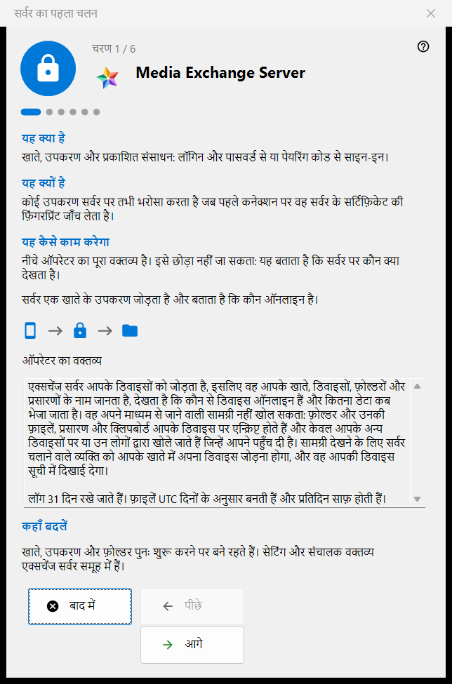
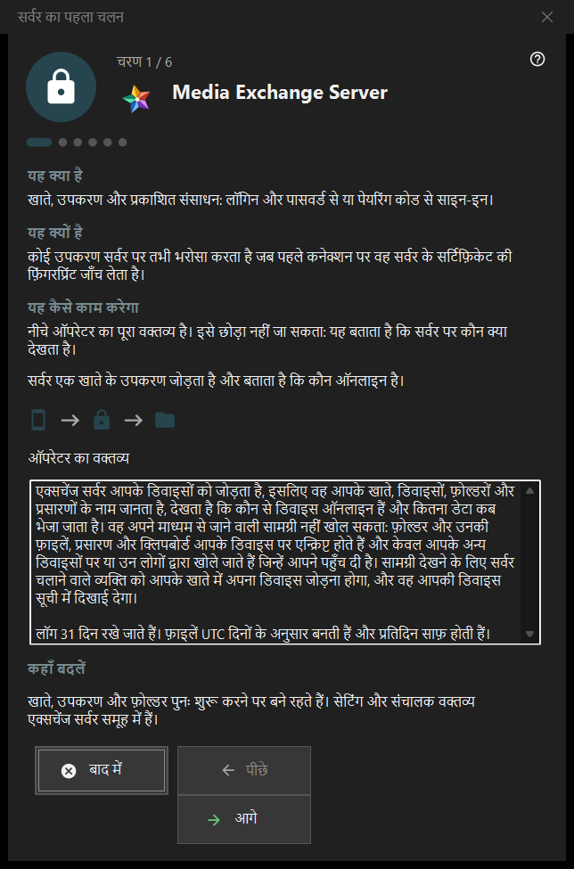

सर्वर का पहला चलन
यह किस लिए है
Share Manager के एक्सचेंज सर्वर समूह के लिए पहली बार चलाने की मार्गदर्शिका। यह बताती है कि यह कंप्यूटर क्या बन जाता है, ऑपरेटर का वक्तव्य दिखाती है, पोर्ट, क्लाइंट के लिए पता और पहला खाता तय करवाती है, और सर्वर की स्थिति पर समाप्त होती है। यह तभी खुलती है जब एक्सचेंज सर्वर मौजूद और सक्षम हो।


इस क्रम में
- पहले पृष्ठ पर ऑपरेटर का वक्तव्य पढ़ें।
- पोर्ट और फ़ायरवॉल का नियम देखें।
- जिस सर्वर संस्करण में सेवा नहीं है, वहाँ Windows सेवा के बारे में निर्णय लें।
- क्लाइंट के लिए पता भरें।
- पहला खाता बनाएँ।
- प्रमाणपत्र का फ़िंगरप्रिंट जाँचें और समाप्त दबाएँ।
तत्व
पृष्ठ और बटन
नीचे की पट्टी में चरण N / M दिखता है; पीछे, आगे और बाद में किसी भी विज़ार्ड की तरह काम करते हैं, और अंतिम पृष्ठ पर समाप्त प्रबंधक का एक्सचेंज सर्वर समूह खोलता है। किसी पृष्ठ को बिना बदलाव छोड़ा जा सकता है: तब सर्वर बंद रहता है या जैसा था वैसा ही रहता है।
ऑपरेटर का वक्तव्य
सर्वर पर कौन क्या देखता है, इसका पूरा वक्तव्य। इसे छोड़ा नहीं जा सकता। सर्वर एक खाते के डिवाइस को आपस में जोड़ता है और बताता है कि उनमें से कौन-से ऑनलाइन हैं।
पोर्ट और फ़ायरवॉल
डिवाइस के मिलने के लिए एक पोर्ट और बाहरी क्लाइंट के लिए पोर्ट की एक श्रेणी। डिवाइस को सर्वर का पोर्ट पता होना चाहिए, इसलिए बदलाव केवल नए कोड पर लागू होते हैं। फ़ायरवॉल का नियम प्रोग्राम के नाम पर है, इसलिए पोर्ट बदलने पर नया नियम नहीं चाहिए। ये मान एक्सचेंज सर्वर समूह में रहते हैं।
Windows सेवा
केवल उस सर्वर संस्करण में दिखती है जहाँ सेवा अभी मौजूद नहीं है। सेवा सर्वर को तब भी उपलब्ध रखती है जब कोई साइन इन नहीं होता। चेक बॉक्स केवल आपकी सहमति याद रखता है: सेवा पहला खाता बनने के बाद, अनुमति के एक अनुरोध के साथ पंजीकृत होती है, और उससे पहले कुछ भी स्थापित नहीं होता। एक्सचेंज समूह में सेवा के रूप में पंजीकृत करें.. बाद में यही काम करता है।
क्लाइंट के लिए पता
क्लाइंट के लिए पता (होस्ट:पोर्ट): वह पता है जिससे दूसरे डिवाइस इस कंप्यूटर तक पहुँचते हैं। स्थानीय पता सुझाएँ दबाने पर ही फ़ील्ड भरता है। खाली पता केवल स्थानीय पहली शुरुआत को मान्य रखता है, पर प्रसारण और फ़ोल्डर कनेक्शन दूसरे डिवाइस से छिपा देता है।
पहला खाता
वह खाता जिससे पहला डिवाइस साइन इन करता है। पासवर्ड बनाएँ या अपना पासवर्ड दर्ज करें चुनें; इस कंप्यूटर को खाते से जोड़ें इस कंप्यूटर को उसमें जोड़ता है। आगे दबाने पर खाता बनता है, सर्वर शुरू होता है और प्रमाणपत्र जाँचा जाता है। पासवर्ड मौजूदा संवाद में एक बार दिखाया जाता है और इस पीसी पर सहेजा नहीं जाता। खाता बनने के बाद कोई विफलता हो तो खाता हटाया नहीं जाता।
सर्वर तैयार है
अंतिम पृष्ठ बताता है कि पता, लॉगिन और प्रमाणपत्र का फ़िंगरप्रिंट कहाँ दर्ज हैं, और फ़िंगरप्रिंट कॉपी करें तथा कनेक्शन स्ट्रिंग और QR कोड.. बटन देता है। पहले कनेक्शन पर फ़िंगरप्रिंट जाँचने के बाद डिवाइस सर्वर पर भरोसा करता है। फ़ोन जोड़ें (सहायता) और पहला फ़ोल्डर प्रकाशित करें (सहायता) के लिंक संबंधित सहायता पृष्ठों पर ले जाते हैं।
प्रबंधक सेटिंग · SFTP साझाकरण सेटिंग · एक्सचेंज सर्वर सेटिंग